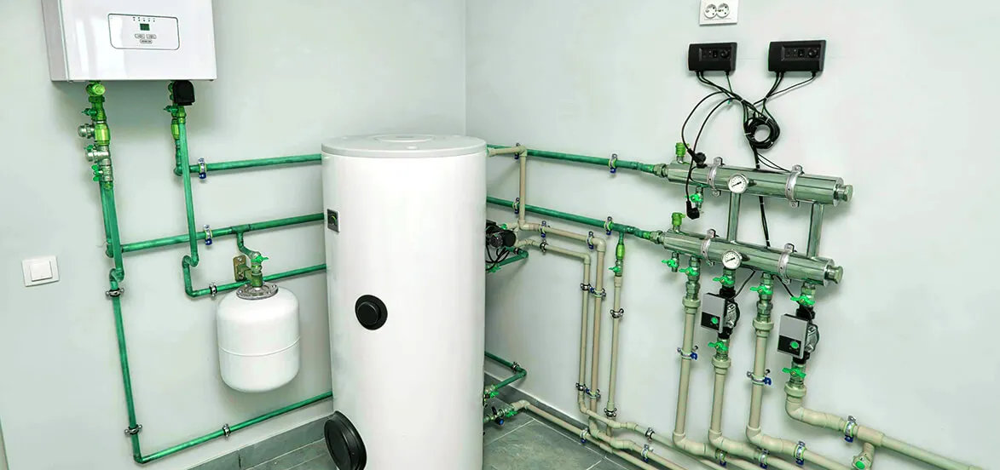

What Should You Know About Keeping Your Water Heater In Good Condition?

No one wants to replace their water heater before it reaches its life expectancy. To take care of your water heater, regular maintenance is needed by the experts EZ Heat and Air.
The water heater is the most common electrical appliance everyone has in their homes. We barely realize how important water heater installation los angeles is until there is some issue! This is why a homeowner must take certain precautions. The best parts of the water heater can wear down if it works under a certain temperature. You can keep your water heater working in good condition when you take proper care and regular maintenance.
EZ Heat and Air offer top quality hot water heater maintenance and water heater repair services. We often find that most water heater problems that occur could have been avoided if homeowners had kept a water heater maintenance schedule.
Signs Your Water Heater Needs Maintenance
Decreased water temperature:
Do you love to take a hot shower in the evening or morning? If you feel there is a drop in temperature, it signifies that the heating elements are not working properly. Call a licensed plumber offering water heater repair services and get an inspection done.
Discolored water:
Do you notice the discoloration in water coming through the water heater? If the color of the water is brown, it indicates something fishy in your heater. There might be sediments in your water heater tank that can damage the interior over time.
Water leakage:
If you notice water leakage from your heater, it signifies the water heater's internal tank is damaged. Leaving the sediments to build up at the base of the water heater untreated causes corrosion that turns into leaks.
Noise from the water heater:
Do you feel the inconvenient sounds from the water heater tank? If your water heater sounds abnormal, it means it needs repairs.
Old tank:
The age of the water heater also matters a lot. If the water heater installed in your space reaches its life expectancy, it starts popping up with many issues. The average life expectancy of the water heater is 7-10 years.
A number of issues can be avoided through timely Water heater repair Orange County. We have mentioned some tips and tricks to help keep your water heater in good condition.
Points To Remind During The Installation Of Water Heater:
Keep some space around the unit:
While installing the water heater in your space, ask the experts to keep some space around it. There should be a healthy distance between your wall and the unit. When there is no space, it is difficult for you in the future during maintenance. It should be installed in such a way so that it can be easily accessible during its service time. Most of us make mistakes during the installation. We install the water heater on the top wall, which makes inspection and observation difficult. So, install this in the portion of the wall where you can easily reach it. The area should be such that water and moisture does not affect the space.
Install it at a certain height:
The experts suggest installing the water heater at a safe height of 1.8 meters or 6 feet from the floor. This ensures your safety and security. It also helps to maintain the water pressure sufficiently.
Secure electrical connection:
While installing the water heater, ensure that it is connected to the MCB. It helps during power fluctuations by minimizing the chances of short circuits. Ensure the switch is sufficient height that your children can't reach.
After going through the installation precaution, now let's talk about the regular hot water heater maintenance tips that every one of us can follow,
Tips You Should Never Miss During The Water Heater Maintenance:
Don't keep the switch on:
Most people prefer to keep their switch on for longer. Are you one of them? Avoid keeping the water heater switched on for a longer period. Most advanced water heaters are available to heat water within 5 minutes. So, when you keep it switched on for ages, it reduces the heater's life expectancy. It extends the quality of the heater and also cuts the utility bill.
Save electricity by customizing temperature:
Water heater maintenance is essential in saving costs. Try to use your water heater at the lowest temperature. When you drop the temperature, it works less, ultimately improving life expectancy. In addition, it also helps to save your electricity cost. Along with that, the chances of accidental scenarios will also be lower. If you have small children, this tip will be beneficial for you. It is worth maintaining the water heater before it is damaged.
Change the rod:
Before winter, you should change the anode rod of your water heater inside the tank. If you have installed the largest water heater, it contains the anode rod, which attracts rust and impurities from water. It ensures that the water that reaches you should be crystal clear and free from impurities. Change this rod occasionally; otherwise, it gets rusted and corroded over time. As per the experts, this rod should be changed at least once every three years.
Pressure valve:
The pressure valve should be replaced every once a year. Check whether the water heater is working or not. If the pressure valve leaks, it's time to ask EZ heat and Repair experts.
Be mindful of the plug:
Fluctuations in power can also mishap the scenario. If you see any burn mark on your plug pin, it causes electrical sockets. To prevent any future electrical short circuit issues, it is good to use sockets and plugs that are completely wired. It would be best if you tried an MCB switch instead of a regular one. The MCB switches prevent chances of any short-circuit.
Replace the inlet:
As per the experts, it would be great if you used metal inlet and outlet pipes. The metal inlets are highly resistant as compared to the standard plastic. If you notice the white deposits around the joints, it's time to replace the inlet or outlet pipe.
Get annual maintenance:
After following all these precautions, you can ask an expert for annual maintenance. Through this, you can avoid water heater problems. After following all these electric water heater maintenance, you can prevent serious issues.
To avoid any serious issues, a water heater maintenance schedule is necessary. Now the question is, whom should you hire for maintenance?
Whom Do You Call To Fix A Water Heater?
Do you know who do you call to fix a water heater? Water heater maintenance is necessary to keep the water heater flowing. It is necessary to maintain the water heater for safety and security purposes. You should ensure safety, efficiency, and longevity. Just like any other appliance, it will break down if you don't give much attention to this.
Hire EZ Heat and Air experts for annual testing. Once the inspection is done, you can relax. Any potential issues will be flagged and you will get a fact-based report.
Regular hot water heater maintenance ensures the efficiency of the system. EZ Heat and Repair is the leading plumbing services company that serves homeowners' heating and cooling needs.
Neglecting to maintain the water heater decreases the water heater longevity of the system. Regular maintenance helps address the problems and repair them within the required time. Improve your water heater lifespan. For any water heater repair or installation, Call EZ Heat and Repair.